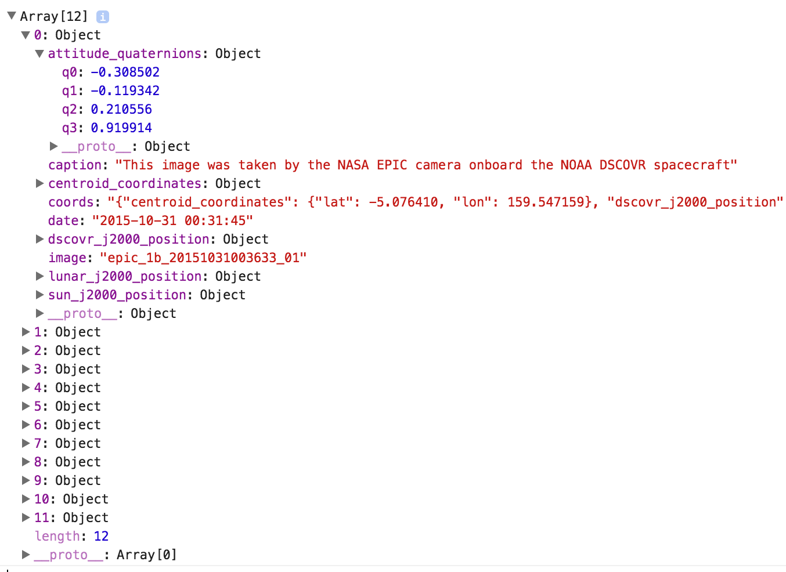
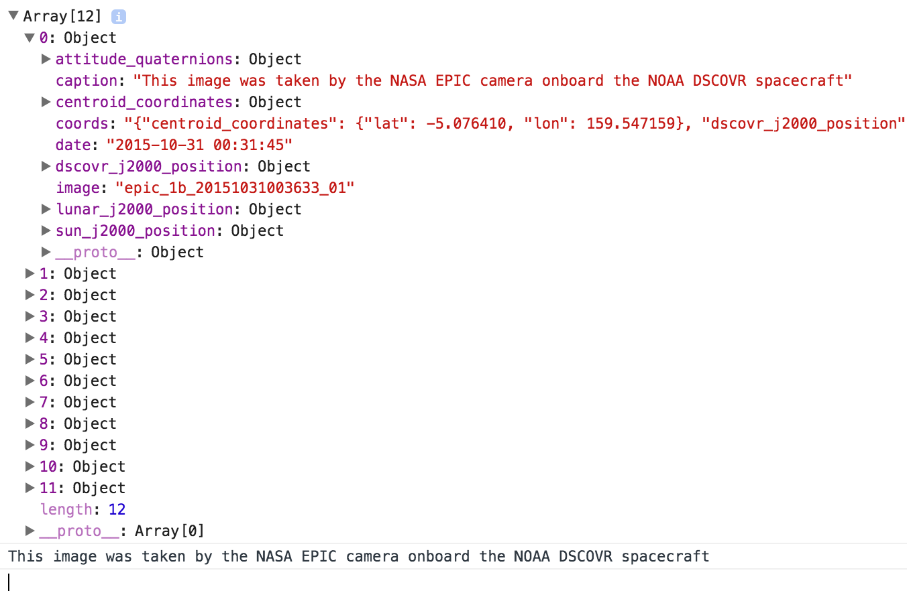

JSON Objects
JSON Basics
The goal of our API requests is to get specific information from the NASA servers. The type of requests we are making are AJAX requests and the type of information such requests return is known as JSON objects. JSON stands for JavaScript Object Notation and is the current standard for the type of information returned from AJAX requests. A JSON object is a means of transmitting information in method/value pairs that can be read and then encoded into JavaScript objects by the developer. To start this discussion, please see the previously presented AJAX request code now with the URL variable defined.
var exampleURL = "https://api.nasa.gov/EPIC/api/natural/date/2015-10-31";
var apiKey = 'Your Key Goes Here';
var request = new XMLHttpRequest();
request.open('GET', exampleURL + '?api_key=' + apiKey, true);
request.addEventListener('load',function(){
if(request.status >= 200 && request.status < 400){
var response = JSON.parse(request.responseText);
console.log(response);
}
else {
console.log("Error in network request: " + request.statusText);
}});
request.send(null);
The chosen URL for this example is the request URL for the EPIC API. The next module will go into full detail regarding the syntax of this specific URL. For now, this is simply going to be used as an example to highlight the information returned from a typical NASA API call.
JSON to Javascript Ojbect
Lets take a quick look again at the following line of code:
var response = JSON.parse(request.responseText);
console.log(response);
The line 'JSON.parse(request.responseText)' takes the received JSON object from our request and parses the text of the request to make a new JavaScript object called 'response'. This response is then displayed to the console. This is incredibly important to the use of these APIs. Once you receive the information you requested, you will want to access it as if it were any other JavaScript object containing methods.
Example Response Object
Alright, enough talking about these JSON objects. Lets take a look at a sample returned object!

The above example object should be returned to your browser console while running the above JavaScript in any basic HTML template. As you can see, the returned object contains a LOT of information. In this example, the returned object is an array of 12 sub objects containing further sub objects, strings, and numeric values. Each of these values can be simply accessed just like any other JavaScript objects. This can be shown by the example below:
var response = JSON.parse(request.responseText);
console.log(response);
var exampleString = response[0].caption;
console.log(exampleString);
This example accesses the first element in the object array 'response[0]' and then accesses the information stored in the 'caption' method. This then is stored into a new variable called exampleString. The console display to this is the following:

As you can see, the console is displaying the value store in 'exampleString' which is the same as the returned array's first object's caption method.
JSON Objects Recap
At this point, you should have a basic understanding of sending AJAX requests in the format that NASA API's demand and then understand how to parse the returned JSON objects into JavaScript objects. The next three modules will go into far greater detail regarding the specific API query URLs syntax, the specifics of the API returned objects, and then an example for each API on how to implement the returned information!